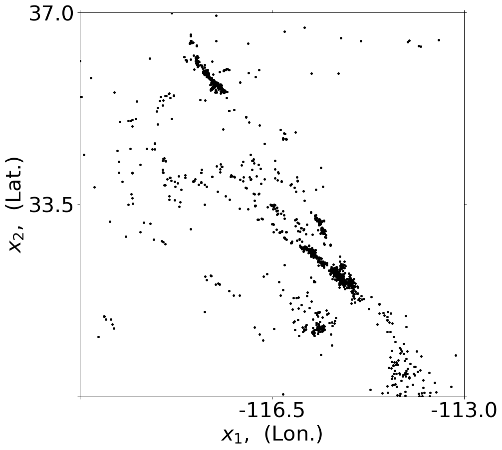
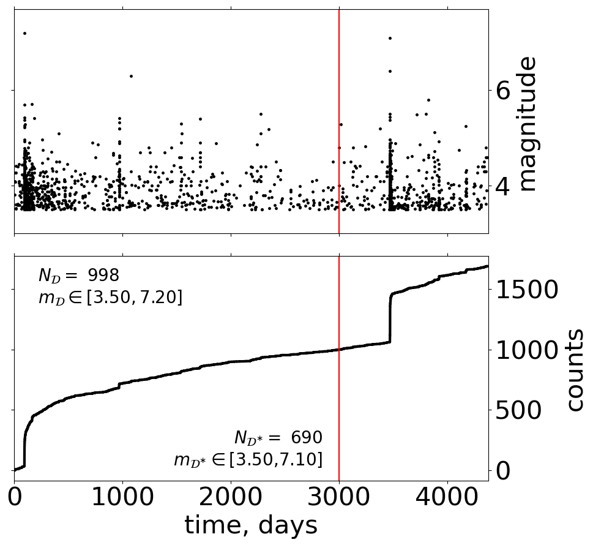
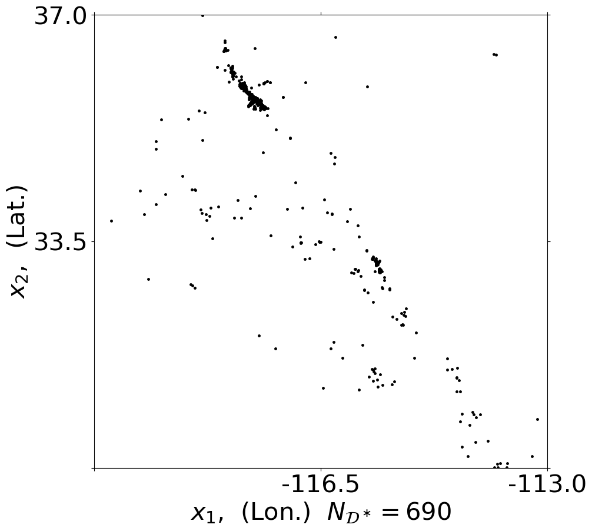

Data from an online source#
Data can be easily downloaded from online sources as * USGS: HOST = ‘earthquake.usgs.gov’
Here we use functionalities provided by the pycsep package which facilitates the data access. Related functions require a datetime.datetime to specify the start and end dates. pycsep provides access to the ComCat web API and to the Bollettino Sismico Italiano API using * csep.query_comcat() * csep.query_bsi().
Define domain#
You have to specify following aspects of the domain:
time domain
time borders for the training T_borders_training
time borders for the testing T_borders_testing
time origin (when was ‘0.’ days) given by a datetime format: ‘%Y-%m-%d %H:%M:%S.%f’
spatial domain X_borders
domain of the marks (magnitudes) usually by m0
[1]:
import gpetas
import numpy as np
import datetime
time_format = "%Y-%m-%d %H:%M:%S.%f"
import csep
from csep.utils import time_utils, comcat
# auto reload using developer version
%load_ext autoreload
%autoreload 2
Californian data#
[2]:
# specify domain
# time domain
time_origin = '2010-01-01 00:00:00.0'
time_end = '2022-01-01 00:00:00.0'
time_origin_obj = datetime.datetime.strptime(time_origin, time_format).replace(
tzinfo=datetime.timezone.utc)
time_end_obj = datetime.datetime.strptime(time_end, time_format).replace(
tzinfo=datetime.timezone.utc)
delta_Tall=(time_end_obj-time_origin_obj).total_seconds()/(60.*60.*24)
T_borders_all = np.array([0.,delta_Tall])
T_borders_training = np.array([0.,3000.])
# spatial domain
X_borders = np.array([[-120., -113.],[ 30., 37.]])
# mark domain: [m0,+inf)
m0=3.5
# case_name (optional)
case_name = 'R002r'
domain_obj = gpetas.utils.R00x_setup.region_class()
domain_obj.T_borders_all = T_borders_all
domain_obj.T_borders_training=T_borders_training
domain_obj.T_borders_testing = np.array([T_borders_training[1],T_borders_all[1]])
domain_obj.time_origin = time_origin
domain_obj.X_borders = X_borders
domain_obj.m0 = m0
domain_obj.case_name = case_name
vars(domain_obj)
[2]:
{'T_borders_all': array([ 0., 4383.]),
'T_borders_training': array([ 0., 3000.]),
'T_borders_testing': array([3000., 4383.]),
'X_borders': array([[-120., -113.],
[ 30., 37.]]),
'X_borders_UTM_km': None,
'X_borders_original': None,
'time_origin': '2010-01-01 00:00:00.0',
'm0': 3.5,
'case_name': 'R002r'}
[3]:
# get pycsep catalog object
start_time = time_origin_obj
end_time = time_end_obj
min_magnitude=domain_obj.m0
min_latitude=domain_obj.X_borders[1,0]
max_latitude=domain_obj.X_borders[1,1]
min_longitude=domain_obj.X_borders[0,0]
max_longitude=domain_obj.X_borders[0,1]
catalog_obj = csep.query_comcat(start_time=start_time, end_time=end_time,
min_magnitude=min_magnitude,
min_latitude=min_latitude,max_latitude=max_latitude,
min_longitude=min_longitude, max_longitude=max_longitude)
Fetched ComCat catalog in 20.812978982925415 seconds.
Downloaded catalog from ComCat with following parameters
Start Date: 2010-01-04 00:02:17.990000+00:00
End Date: 2021-12-19 10:27:35.704000+00:00
Min Latitude: 30.0063 and Max Latitude: 36.989
Min Longitude: -119.9986667 and Max Longitude: -113.1498
Min Magnitude: 3.5
Found 1688 events in the ComCat catalog.
[5]:
# cat2data_obj
data_obj = gpetas.utils.get_data_pycsep.data_obj__from_catalog_obj(catalog_obj=catalog_obj,R_obj=domain_obj)
Warning:
Warning: 1 Duplicate(s) in the data set.
jitter= 1.5046296084619826e-06
Values at idx [695] and [696] (counting from 0 to n-1) are the same.
Time: [968.88711481] [968.88711481] days.
NEW Times: [968.88711481] [968.88711632] days.
NEW number of time duplicates= 0
----------------------------------------------------------------------
total number of events = 1688
time origin = 2010-01-01 00:00:00+00:00
Starting time = 0.0 time max= 4383.0
T_borders all = [ 0. 4383.]
|T| = 4383.0 days.
T_borders training = [ 0. 3000.]
min event time = 3.0015971064814817
max event time = 4370.435829907407
X_borders = [[-120. -113.]
[ 30. 37.]]
|X|= 49.0 deg**2
x lon min -119.9986667 x lon max -113.1498 dx= 6.848866700000002
y lat min 30.0063 y lat max 36.989 dy= 6.982699999999998
minimum magnitude 3.5 maximum magnitude 7.2
Number of identical event times: 0
Fname is: comcat_R002r_m0_35.dat
____________________________________________________
data_obj has been created and saved in: output/inference_results/data_obj_R002r.all
[6]:
h=gpetas.plotting.plot_setting(data_obj=data_obj)




Italian data#
[8]:
# specify domain
# L'Aquila:
# 04/02/2001 to the 28/3/2020
# X = [12E,15E] × [41N,44N]
# 3.0 ≤ m ≤ 6.5
# (Ntraining = 723 events, Ttraining = [0,4000] days),
# and test data, all events with ti > 4000 days (Ntest = 1466, Ttest = [4000,6993] days)
# time domain
time_origin = '2001-02-04 00:00:00.0'
time_end = '2020-03-28 00:00:00.0'
time_origin_obj = datetime.datetime.strptime(time_origin, time_format).replace(
tzinfo=datetime.timezone.utc)
time_end_obj = datetime.datetime.strptime(time_end, time_format).replace(
tzinfo=datetime.timezone.utc)
delta_Tall=(time_end_obj-time_origin_obj).total_seconds()/(60.*60.*24)
T_borders_all = np.array([0.,delta_Tall])
T_borders_training = np.array([0.,4000.])
# spatial domain
X_borders = np.array([[12., 15.],[ 41., 44.]])
# mark domain: [m0,+inf)
m0=3.0
domain_obj = gpetas.utils.R00x_setup.region_class()
domain_obj.T_borders_all = T_borders_all
domain_obj.T_borders_training=T_borders_training
domain_obj.T_borders_testing = np.array([T_borders_training[1],T_borders_all[1]])
domain_obj.time_origin = time_origin
domain_obj.X_borders = X_borders
domain_obj.m0 = m0
vars(domain_obj)
[8]:
{'T_borders_all': array([ 0., 6992.]),
'T_borders_training': array([ 0., 4000.]),
'T_borders_testing': array([4000., 6992.]),
'X_borders': array([[12., 15.],
[41., 44.]]),
'X_borders_UTM_km': None,
'X_borders_original': None,
'time_origin': '2001-02-04 00:00:00.0',
'm0': 3.0}
[11]:
# get pycsep catalog object
start_time = time_origin_obj
end_time = time_end_obj
min_magnitude=domain_obj.m0
min_latitude=domain_obj.X_borders[1,0]
max_latitude=domain_obj.X_borders[1,1]
min_longitude=domain_obj.X_borders[0,0]
max_longitude=domain_obj.X_borders[0,1]
catalog_obj = csep.query_bsi(start_time=start_time, end_time=end_time,
min_magnitude=min_magnitude,
min_latitude=min_latitude,max_latitude=max_latitude,
min_longitude=min_longitude, max_longitude=max_longitude)
---------------------------------------------------------------------------
AttributeError Traceback (most recent call last)
Cell In[11], line 9
7 min_longitude=domain_obj.X_borders[0,0]
8 max_longitude=domain_obj.X_borders[0,1]
----> 9 catalog_obj = csep.query_bsi(start_time=start_time, end_time=end_time,
10 min_magnitude=min_magnitude,
11 min_latitude=min_latitude,max_latitude=max_latitude,
12 min_longitude=min_longitude, max_longitude=max_longitude)
AttributeError: module 'csep' has no attribute 'query_bsi'
[ ]:
# cat2data_obj
data_obj = gpetas.utils.get_data_pycsep.data_obj__from_catalog_obj(catalog_obj=catalog_obj,R_obj=domain_obj)
[ ]:
h=gpetas.plotting.plot_setting(data_obj=data_obj)